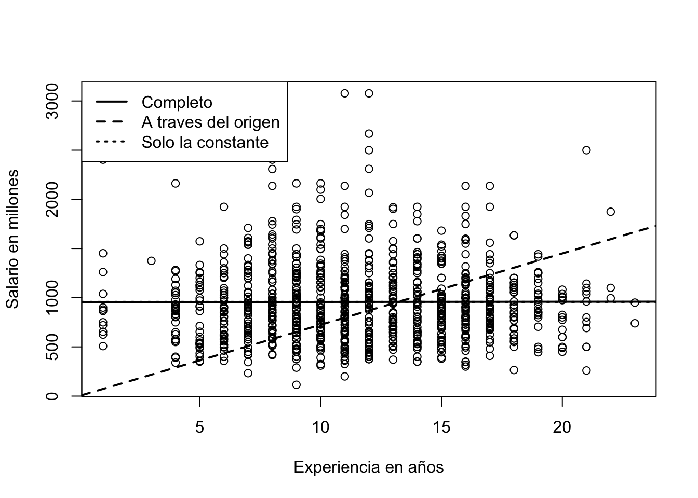

library(readxl) #Para cargar datos de excel (xls)
datos <-read_excel("Salarios.xlsx")
Salario<-datos$wage
Experiencia<- datos$exper5: Formas Funcionales de MCO

Las formas funcionales de la regresión son representaciones matemáticas que describen la relación entre las variables dependientes e independientes en un modelo econométrico. Entre las más comunes se encuentran la forma lineal, log-lineal, log-log y la cuadrática.
Resumen
Para esta parte se hace uso del análisis de varianza-covarianza de cada uno de los estimadores del modelo. Se plantean las interpretaciones de coeficientes con prueba y se marcan un par de modelos econométricos sin intercepto y con intercepto conocidos como formas funcionales distintas al tradicional MCO.
Análisis Varianza-covarianza
Ya estimado el modelo, es bueno convenir el calculo de los residuos y realizar pruebas especificas. Es bueno conocer como se estima la desviación estándar (varianza) de los estimadores. Para el modelo en su totalidad \(\mu_{i}\) es:
\[\widehat{\sigma}^{2}= \frac{1}{n-2} \times \sum\limits_{i=1}^{n}\mu_{i}^{2}= \frac{n-1}{n-2}\times Var(\mu_{i})\]
Lo anterior es la manera o forma de obtener el respectivo error estándar de la regresión o modelo estimado. Se puede hacer con cualquiera de las dos formas de la ecuación.
Para el parámetro marginal \(\beta_{1}\) o pendiente: \[SE\left ( \beta_{1} \right )=\sqrt\frac{\sigma^{2}}{\sum \limits_{i=1}^{n}\left ( x_{i} - \bar{x} \right )^{2}}=\frac{1}{\sqrt{n-1}} \cdot\frac{\sigma}{sd(x_i)}\]
Para el parámetro autónomo (constante) \(\beta_{0}\):
\[SE\left ( \hat\beta_{0} \right )=\sqrt{\frac{\sigma^{2} \bar{x}^2 }{\sum \limits_{i=1}^{n}\left ( x_{i} - \bar{x} \right )^{2}}}=\frac{1}{\sqrt{n-1}} \cdot\frac{\sigma}{sd(x_i)}\cdot \sqrt{\bar{x}^2}\]
Hay que tener cuidado con la varianza \(\sigma^{2}\) que hace referencia a la desviación de los residuos. Es decir:
\[\sigma^{2}=\frac{1}{n-2}\sum \limits_{i=1}^{n} \mu_{i}^{2}\]
Estos elementos pueden ser tomados como elementos matriciales de tal forma que:
\[\text{Matriz Covarianza}=\begin{bmatrix} var\left ( \widehat{\beta}_{1} \right ) & cov \left ( \widehat{\beta}_{0},\widehat{\beta}_{1} \right ) \\ cov \left ( \widehat{\beta}_{0},\widehat{\beta}_{1} \right ) & var\left ( \widehat{\beta}_{0} \right ) \end{bmatrix}\]
Las raíces cuadradas de las varianzas son los errores de los coeficientes estimados:
\[\begin{aligned} se\left ( \beta_{0} \right ) &= \sqrt{var\left ( \beta_{0} \right )} \\ se\left ( \beta_{1} \right ) &= \sqrt{var\left ( \beta_{1} \right )} \end{aligned}\]
Obtener todos estos elementos, permitirán hacer inferencia estadística y validar las estimaciones que vamos realizando con el conjunto de variables explicadas y explicativas.
Luego de cargados los datos, procedemos a realizar la parte del modelo
# Estimamos nuestro modelo de regresión lineal
resultado <- lm(Salario ~ Experiencia, data = datos)
# Numero de observaciones:
( n <- nobs(resultado) )[1] 935# Sig.res: var Residuo estándar de la regresión / o error de la regresión
(Sig.res <- sd(resid(resultado)) * sqrt((n-1)/(n-2)) )[1] 404.5765# SE de b0hat y de b1hat, respectivamente:
Sig.res / sd(datos$exper) / sqrt(n-1) * sqrt(mean(datos$exper^2))[1] 37.4111Sig.res / sd(datos$exper) / sqrt(n-1)[1] 3.026148# Los cálculos de los errores estándar de la regresión en un solo paso:
summary(resultado)
Call:
lm(formula = Salario ~ Experiencia, data = datos)
Residuals:
Min 1Q Median 3Q Max
-842.43 -289.13 -52.84 201.86 2120.17
Coefficients:
Estimate Std. Error t value Pr(>|t|)
(Intercept) 955.6049 37.4111 25.543 <2e-16 ***
Experiencia 0.2024 3.0261 0.067 0.947
---
Signif. codes: 0 '***' 0.001 '**' 0.01 '*' 0.05 '.' 0.1 ' ' 1
Residual standard error: 404.6 on 933 degrees of freedom
Multiple R-squared: 4.795e-06, Adjusted R-squared: -0.001067
F-statistic: 0.004474 on 1 and 933 DF, p-value: 0.9467Los errores estándar son muy importantes a la hora de hacer inferencia estadística. Con ellos podemos obtener los t-calculados de los \(\beta's\) obtenidos de nuestro modelo y dimensionar si son significativos a los niveles de significancia exigidos.
Una salida mejor del modelo anterior
# Crear tabla con huxreg
md1 <- lm(Salario ~ Experiencia)
md1result <- huxreg("Tabla #1" = md1)
# Mostrar tabla
md1result| Tabla #1 | |
|---|---|
| (Intercept) | 955.605 *** |
| (37.411) | |
| Experiencia | 0.202 |
| (3.026) | |
| N | 935 |
| R2 | 0.000 |
| logLik | -6938.363 |
| AIC | 13882.725 |
| *** p < 0.001; ** p < 0.01; * p < 0.05. | |
Coeficiente de Determinación R-Cuadrado
Los estadísticos de ajuste (nos muestran que tanto los datos se ajustan a la linea de regresión estimada). Para esto requerimos de ciertos elementos que provienen del análisis de varianza-covarianza y uno de ellos es el estimador de la varianza de \((\mu_{i})\).
\[\textrm{Suma total de cuadrados} \equiv SST= \sum_{i=1}^{n} \left ( y_{i}- \bar{y} \right )^{2}\]
\[\textrm{Suma explicada de los cuadrados} \equiv SSE= \sum_{i=1}^{n} \left( \hat{y}_{i}- \bar{y} \right)^{2}\] \[\textrm{Suma de los residuos al cuadrado} \equiv SSR= \sum_{i=1}^{n} \hat{\mu}_{i}^{2}\]
La suma total de cuadrados (SST) puede ser reescrita de la siguiente forma:
\[SST=SSE+SSR\] Llegar a obtener entonces nuestro estimado de R_-Cuadrado es:
\[R^{2}=1-\frac{SSR}{SST} \equiv \frac{Var(\widehat{Y})}{Var(Y)} \equiv 1- \frac{Var(\widehat{\mu}_{i})}{Var(Y)}\]
Recuerde que los límites del coeficiente están dados por \(0 \leqslant R^{2} \leqslant 1\). Si el coeficiente es igual a 1, (\(R^{2}=1\)), significa un ajuste perfecto del modelo, es decir, la regresión estimada explica completamente la variación de los (y) observados. Lo que significa que (\(y=\widehat{y}\)), lo cual es altamente improbable.
#Modelo
resultado <- lm(wage ~ exper, data = datos)
# Calculamos valores predichos y los residuos del modelo:
sal.hat <- fitted(resultado)
u.hat <- resid(resultado)
# Luego calculamos el R^2 de las tres formas diferentes:
sal <- datos$wage #Usamos la dependiente
var(sal.hat) / var(sal) #Forma 1[1] 4.794796e-061 - var(u.hat) / var(sal) #Forma 2[1] 4.794796e-06cor(sal, sal.hat)^2 #Forma 3[1] 4.794796e-06Note que cualquier versión que use nos brinda el mismo resultado, en este caso podemos determinar que la Experiencia (variable explicativa) explica en un 0.0% las variaciones del salario. El ajuste del modelo es muy malo para este caso. Algunas lecturas dentro del coeficiente R-Cuadrado son:
\[R^{2}=\left\{\begin{matrix} >95\%&= \text{Excelente ajuste} \\ \text{Entre}\; 50\%-94\%&= \text{Muy buen ajuste}\\ \text{Entre}\; 25\%-49\%&= \text{Buen ajuste}\\ \text{Entre}\; 5\%-24\%&= \text{Ajuste regular}\\ <5\%&= \text{Ajuste muy bajo} \end{matrix}\right.\]
Sin embargo, siempre lo mejor es estar mirando los T-estadisticos y sus Probabilidades o P-values , recuerde que la opción es que estos sean significativos en los distintos niveles de confianza:
- Si T-calculado es > a T-Critico, entonces siempre rechazará \(H_{0}\) y sera significativo su estimador \(\beta\)
De igual manera ocurre con las probabilidades de los valores T.
| Nivel | Probabilidad | Criterio | Estrellas |
|---|---|---|---|
| 1 | 90% | 0.090 | * |
| 2 | 95% | 0.049 | ** |
| 3 | 99% | 0.001 | *** |
Siempre se rechazará la hipótesis nula si el P-Value es menor a los valores de criterio. Por ejemplo: Suponga que su Pr-Value es de 0.03, solamente es menor al criterio del 95% y 90% respectivamente, por ende, solo sera significativo en esos rangos de probabilidad y tendrá dos estrellas (**).
Este indicador, es mucho mas importante que el mismo R-Cuadrado.
Formas funcionales de modelo M.C.O
Hay también otras formas funcionales de estimación de regresión, estas dependerán de la manera que el investigador prefiera estimar su modelo (de acuerdo a lo que va observando) y tambien a partir de la teoría:
\[\begin{aligned} \widehat{y} &= \beta_{0}+\beta_{1}x +\mu \quad \text{Lineal en niveles} \\ ln(\widehat{y}) &= \beta_{0}+\beta_{1}x +\mu \quad \text{Log-Lin} \\ \widehat{y} &= \beta_{0}+\beta_{1}lnx +\mu \quad \text{Lin-Log} \\ ln(\widehat{y}) &= \beta_{0}+\beta_{1}lnx +\mu \quad \text{Log-Log} \end{aligned}\]
La clave es tener en cuenta la forma o manera de interpretar cada uno de los coeficientes o parámetros que arroja cada modelo. Por ejemplo:
\[\widehat{y} = \beta_{0}+\beta_{1}lnx +\mu \quad \text{Lin-Log}\]
Es un modelo que esta en niveles en la dependiente y en logaritmo en la variable explicativa. El \(\beta\) obtenido debe interpretarse como: Por un uno (1) % que aumente la variable X, la variable Y será de \(\beta_{i}/100\) unidades. Simplemente hay que colocar la opción de \(Log\) en R y este calculará automáticamente el logaritmo natural o neperiano de la variable en cuestión. Recuerde que el logaritmo solo opera con entradas o valores distintos a cero (0).
##Para otras formas funcionales##:
#Log-Lin
lm(log(wage) ~ exper, data=datos)
Call:
lm(formula = log(wage) ~ exper, data = datos)
Coefficients:
(Intercept) exper
6.756070 0.001983 #Lin-Log
lm(wage ~ log(exper), data=datos)
Call:
lm(formula = wage ~ log(exper), data = datos)
Coefficients:
(Intercept) log(exper)
938.558 8.231 8.231/100 # Recuerde que hay que dividir entre 100[1] 0.08231#Log-Log
lm(log(wage) ~ log(exper), data=datos)
Call:
lm(formula = log(wage) ~ log(exper), data = datos)
Coefficients:
(Intercept) log(exper)
6.73102 0.02037 De los modelos mas utilizados en econometría suelen ser los log-log por su fácil implementación e interpretación a parte que suelen cumplir con la mayoría de los supuestos establecidos de M.C.O.
Múltiples resultados
En algunas ocasiones, se deben presentar tablas cuando se han estimado o realizado varios modelos, algunos incluiran mas controles que otros, etc. Para eso existe un paquete como stargazer que veremos mas adelante y el paquete huxtable
Un ejemplo o salida de forma adicional de formato de MCO es:
#install.packages('huxtable')
library(huxtable)
huxreg(resultado)| (1) | |
|---|---|
| (Intercept) | 955.605 *** |
| (37.411) | |
| exper | 0.202 |
| (3.026) | |
| N | 935 |
| R2 | 0.000 |
| logLik | -6938.363 |
| AIC | 13882.725 |
| *** p < 0.001; ** p < 0.01; * p < 0.05. | |
Y podremos tener los resultados en forma resumida de un modelo. Si queremos implementar la salida de varios modelos a la vez, hay que constituir una lista para eso, de tal forma que podemos tener:
#Log-Lin
l1<-lm(log(wage) ~ exper, data=datos)
#Lin-Log
l2<-lm(wage ~ log(exper), data=datos)
#Log-Log
l3<-lm(log(wage) ~ log(exper), data=datos)
# Desarrollo de la forma grupal
grupo <- list("Modelo Lineal" = resultado, "Modelo Log-Lin" = l1,
"Modelo Lin-log" = l2, "Modelo Log-Log" = l3)
huxreg(grupo, statistics = c(N = "nobs", R2 = "r.squared"),
note = "Nota: Los resultados deben interpretarse completamente")| Modelo Lineal | Modelo Log-Lin | Modelo Lin-log | Modelo Log-Log | |
|---|---|---|---|---|
| (Intercept) | 955.605 *** | 6.756 *** | 938.558 *** | 6.731 *** |
| (37.411) | (0.039) | (66.371) | (0.069) | |
| exper | 0.202 | 0.002 | ||
| (3.026) | (0.003) | |||
| log(exper) | 8.231 | 0.020 | ||
| (27.611) | (0.029) | |||
| N | 935 | 935 | 935 | 935 |
| R2 | 0.000 | 0.000 | 0.000 | 0.001 |
| Nota: Los resultados deben interpretarse completamente | ||||
De la elasticidad
Dentro del análisis econométrico, sobre sale también el económico, podemos usar una medida de sensibilidad de las variables, este es simple y se denomina elasticidad . Considere siempre que la identificación es:
\[Elasticidad=\left\{\begin{matrix} |\epsilon| > & 1 \quad \text{Elástica} \\ |\epsilon| < & 1 \quad \text{Inelástica} \\ |\epsilon| = & 1 \quad \text{Unitaria} \\ \end{matrix}\right.\]
Hay que tener presente la ecuación de la elasticidad es:
\[\epsilon= \frac{\delta Y/Y}{\delta X/X} = \frac{\delta Y}{\delta X} \times \frac{X}{Y}\]
En el caso del modelo de regresión, estimar el \(\beta_{i}\) resulta ser la medida del cambio de \(Y\) brindado por \(X\). Lo que resulta ser: \[\epsilon= \widehat{\beta}_{i} \times \frac{X}{Y}\]
Para una simplificación mayor tomaremos los valores promedios de cada una de las variables explicativas y dependiente y con esto se obtendrá la elasticidad promedio.
#Para elasticidad
attach(datos)
(b1hat <- cov(exper,wage)/var(exper)) #Hallar beta de reg[1] 0.2024031elasticidad<-b1hat*(exper/sal.hat)
## Distintas formas ##
melasticidad<-b1hat*(mean(exper)/mean(wage)) #Forma 1
melasticidad2<-b1hat*(mean(exper)/mean(sal.hat)) #Forma 2
## Tabla de salida
cbind(wage, exper, elasticidad, melasticidad, melasticidad2 )[1:10,] wage exper elasticidad melasticidad melasticidad2
1 769 11 0.002324453 0.002443266 0.002443266
2 808 11 0.002324453 0.002443266 0.002443266
3 825 11 0.002324453 0.002443266 0.002443266
4 650 13 0.002745920 0.002443266 0.002443266
5 562 14 0.002956520 0.002443266 0.002443266
6 1400 14 0.002956520 0.002443266 0.002443266
7 600 13 0.002745920 0.002443266 0.002443266
8 1081 8 0.001691584 0.002443266 0.002443266
9 1154 13 0.002745920 0.002443266 0.002443266
10 1000 16 0.003377454 0.002443266 0.002443266detach(datos)Para este caso la elasticidad punto o individual de cada una de las observaciones es un tinte inelástica, lo que apoya a decir que un cambio en un uno (1) por-ciento % genera un cambio en el salario de 0.2 por-ciento.
Regresión sin constante, con constante y con constante e intercepto
Algunas veces, se hace necesario -solo si la teoría así lo indica- de estimar una regresión a través del origen o sin constante o intercepto. Las opciones para este tipo de estimaciones son:
#Regresion sin constante, con constante y solo constante
# La regresión normal
(reg1 <- lm(wage ~ exper, data=datos))
Call:
lm(formula = wage ~ exper, data = datos)
Coefficients:
(Intercept) exper
955.6049 0.2024 # Regresión sin intercepto (a través del origen):
(reg2 <- lm(wage ~ 0 + exper, data=datos))
Call:
lm(formula = wage ~ 0 + exper, data = datos)
Coefficients:
exper
72.5 # Regresión sin pendiente con solo la constante:
(reg3 <- lm(wage ~ 1 , data=datos))
Call:
lm(formula = wage ~ 1, data = datos)
Coefficients:
(Intercept)
957.9 # Es el mismo promedio
mean(datos$wage)[1] 957.9455Un resumen de los resultados de cada modelo ahora estimado:
reg1 <- lm(wage ~ exper, data=datos)
reg2 <- lm(wage ~ 0 + exper, data=datos)
reg3 <- lm(wage ~ 1 , data=datos)
# Todo el grupo de regresiones
regfh <- list("Modelo Lineal" = reg1, "Modelo sin constante" = reg2,
"Modelo sin explicativa" = reg3)
huxreg(regfh, statistics = c(N = "nobs", R2 = "r.squared"),
note = "Nota: Son transformaciones simples")| Modelo Lineal | Modelo sin constante | Modelo sin explicativa | |
|---|---|---|---|
| (Intercept) | 955.605 *** | 957.945 *** | |
| (37.411) | (13.224) | ||
| exper | 0.202 | 72.505 *** | |
| (3.026) | (1.394) | ||
| N | 935 | 935 | 935 |
| R2 | 0.000 | 0.743 | 0.000 |
| Nota: Son transformaciones simples | |||
A continuación el grupo de lineas que implican esto:
# Gráfico de las 3 regresiones
plot(datos$exper, datos$wage, xlab = "Experiencia en años", ylab = "Salario en millones")
abline(reg1, lwd=2, lty=1)
abline(reg2, lwd=2, lty=2)
abline(reg3, lwd=2, lty=3)
legend("topleft",c("Completo","A traves del origen","Solo la constante"),lwd=2,lty=1:3)